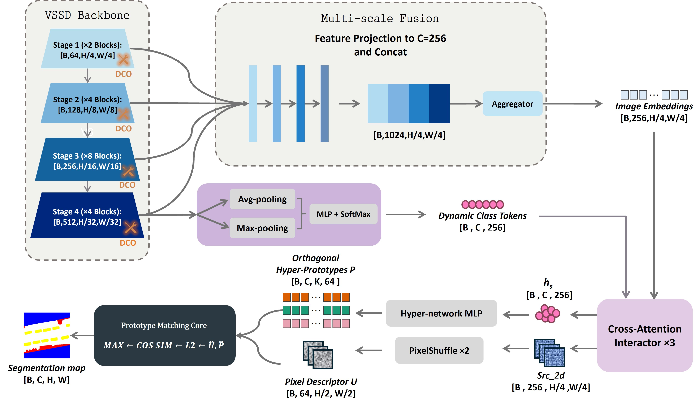
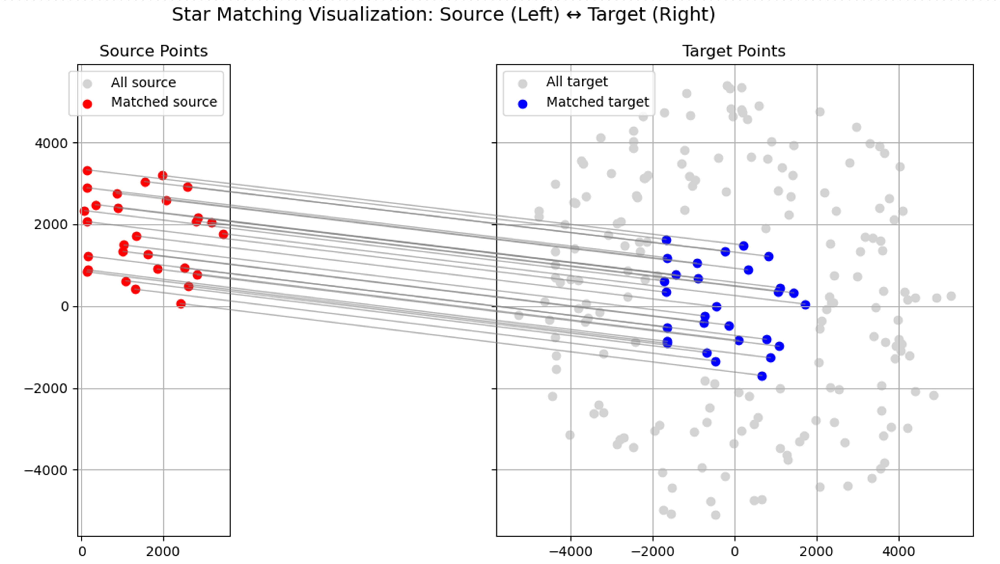
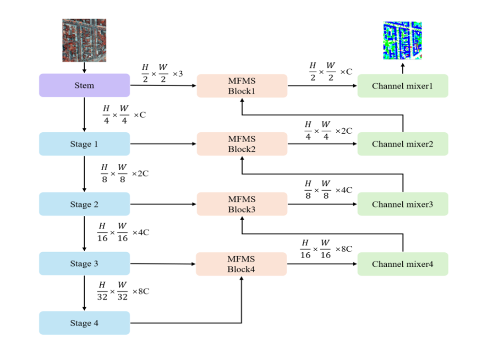
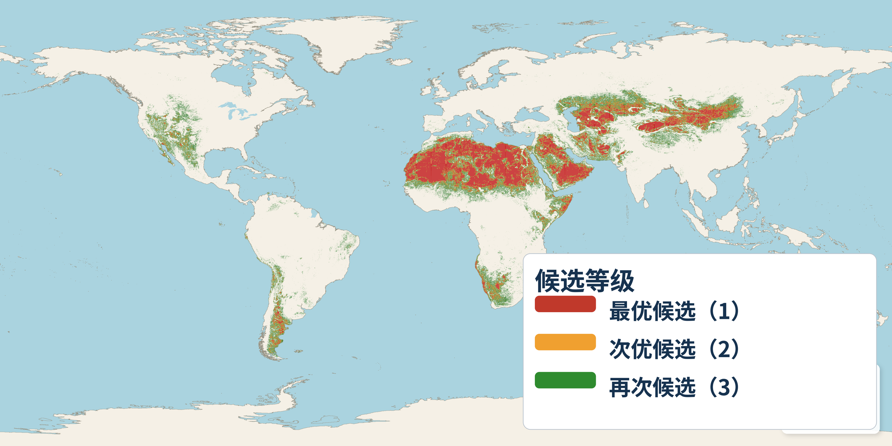

个人简介 About Me
你好！我是 王康宁，目前在 北京航空航天大学 杭州国际创新研究院（北航国新院）及天目山实验室攻读控制科学与工程博士学位，师从 姜志国教授 与 张浩鹏教授。
我的主要研究方向聚焦于遥感图像语义分割与视觉状态空间模型 (Mamba / SSM)。
Hello! I am Kangning Wang, currently a Ph.D. student in Control Science & Engineering at Hangzhou International Innovation Institute, Beihang University (BUAA) and Tianmushan Laboratory, supervised by Prof. Zhiguo Jiang and Prof. Haopeng Zhang.
My primary research focus lies in Remote Sensing Semantic Segmentation and Vision State Space Models (SSMs / Mamba).
最新动态 News & Updates
2026.08
📄 遥感滑坡细粒度分割论文 LSMamba (Bridging Global Context and Local Detail in State Space Models for Fine-Grained Landslide Segmentation in Remote Sensing Imagery) 被遥感顶级期刊 IEEE J-STARS 正式录用！
📄 Paper LSMamba (Bridging Global Context and Local Detail in State Space Models for Fine-Grained Landslide Segmentation in Remote Sensing Imagery) has been accepted for publication in IEEE J-STARS!
2026.07
🛰️ 论文《载人航天器返回全球着陆区自动筛选》被 第七届载人航天学术大会 (2026) 正式录用！
🛰️ Paper on automatic screening of global landing zones for manned spacecraft return missions has been accepted by The 7th Manned Spaceflight Academic Conference (2026)!
2026.06
2026.03
🚀 论文 From Raw Telemetry to Calibrated Space-Object Catalogs: A Self-Calibrating Pipeline for a Space-Based Star-Field Imager 被 SPIE Astronomical Telescopes + Instrumentation 2026 正式录用！
🚀 Paper on self-calibrating pipeline for a space-based star-field imager has been accepted for inclusion in SPIE Astronomical Telescopes + Instrumentation 2026!
2025.06
📄 遥感图像语义分割状态空间模型论文 Enhanced-RSMamba: state space model for semantic segmentation of remote sensing images 被 SPIE Sensors + Imaging 2025 正式录用！
📄 Paper Enhanced-RSMamba: state space model for semantic segmentation of remote sensing images has been accepted for inclusion in SPIE Sensors + Imaging 2025!
重点研究方向 Research Focus
遥感图像语义分割 Remote Sensing Semantic Segmentation
视觉状态空间模型 Vision State Space Models (SSM)
遥感图像智能解译 Remote Sensing Image Interpretation
发表论文 Selected Publications

Bridging Global Context and Local Detail in State Space Models for Fine-Grained Landslide Segmentation in Remote Sensing Imagery (LSMamba)
IEEE Journal of Selected Topics in Applied Earth Observations and Remote Sensing
(J-STARS), 2026
IEEE JSTARS

From Raw Telemetry to Calibrated Space-Object Catalogs: A Self-Calibrating Pipeline for a Space-Based Star-Field Imager
SPIE Astronomical Telescopes + Instrumentation, Vol. 14155, 2026

Enhanced-RSMamba: State Space Model for Semantic Segmentation of Remote Sensing Images
SPIE Sensors + Imaging, 2025

载人航天器返回全球着陆区自动筛选 Automatic Screening of Global Landing Zones for Manned Spacecraft Return Missions
第七届载人航天学术大会，2026
The 7th Manned Spaceflight Academic Conference, 2026
开源项目 Open Source Projects
CRISP
GitHub ↗ECCV 2026 论文官方开源实现。针对遥感图像语义分割提出的校准感知视觉状态空间对偶模型 (Calibration-Aware Visual State Space Duality)，全面集成 MMSegmentation 流水线。 Official PyTorch implementation for ECCV 2026 paper CRISP. A calibration-aware visual state space duality architecture for remote sensing semantic segmentation, integrated into MMSegmentation.
LSMamba
GitHub ↗基于视觉状态空间架构 (SSM / VSSD) 的遥感细粒度语义分割模型（包含 SFC 结构特征校准模块、LDEM 局部增强模块与轻量高效解码器）。 Vision State Space Duality model for fine-grained remote sensing segmentation with Structural Feature Calibration (SFC) and Local Detail Enhancement (LDEM).
web-page-translator
GitHub ↗面向学术阅读与多语言网页的浏览器沉浸式翻译扩展，支持双语对照、学术公式格式保留与划词智能翻译。 An open-source browser extension for immersive academic translation, supporting bilingual display, formula preservation, and quick selection translation.
教育经历 Education
-
控制科学与工程 - 硕博连读 Integrated Master-Ph.D. in Control Science & Engineering北京航空航天大学 / 天目山实验室 Beihang University (BUAA) / Tianmushan Laboratory2024.09 - 至今Present
-
电子信息工程 - 工学学士 B.Eng. in Electronic Information Engineering武汉理工大学 Wuhan University of Technology (WUT)2019.09 - 2023.06